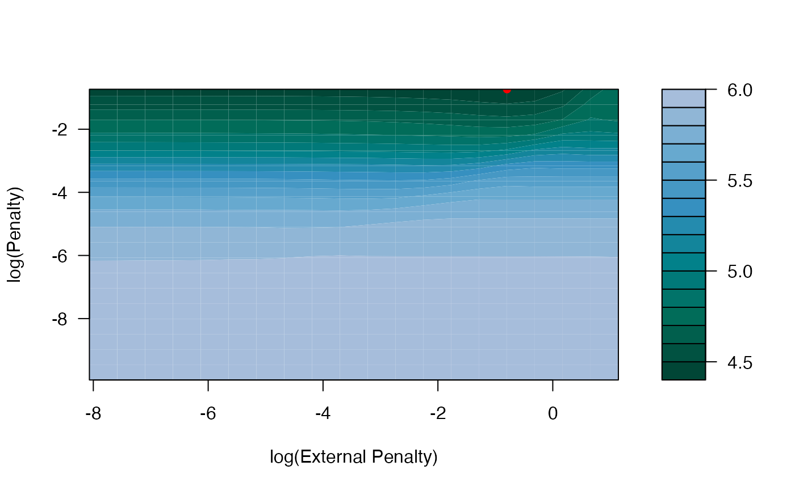
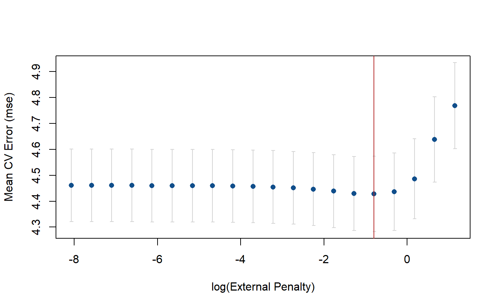

Generates plots to visualize the mean cross-validation error. If no external data was used in the model fit, a plot of the cross-validated error with standard error bars is generated for all penalty values. If external data was used in the model fit, a contour plot of the cross-validated errors is created. Error curves can also be generated for a fixed value of the primary penalty on x (p) or the external penalty (pext) when external data is used.
# S3 method for tune_xrnet plot(x, p = NULL, pext = NULL, ...)
| x | A tune_xrnet class object |
|---|---|
| p | (optional) penalty value for x (for generating an error curve across external penalties). Use value "opt" to use the optimal penalty value. |
| pext | (optional) penalty value for external (for generating an error curve across primary penalties) Use value "opt" to use the optimal penalty value. |
| ... | Additional graphics parameters |
None
The parameter values p and pext can be used to generate profiled error curves by fixing either the penalty on x or the penalty on external to a fixed value. You cannot specify both at the same time as this would only return a single point.
## load example data data(GaussianExample) ## 5-fold cross validation cv_xrnet <- tune_xrnet( x = x_linear, y = y_linear, external = ext_linear, family = "gaussian", control = xrnet.control(tolerance = 1e-6) ) ## contour plot of cross-validated error plot(cv_xrnet)